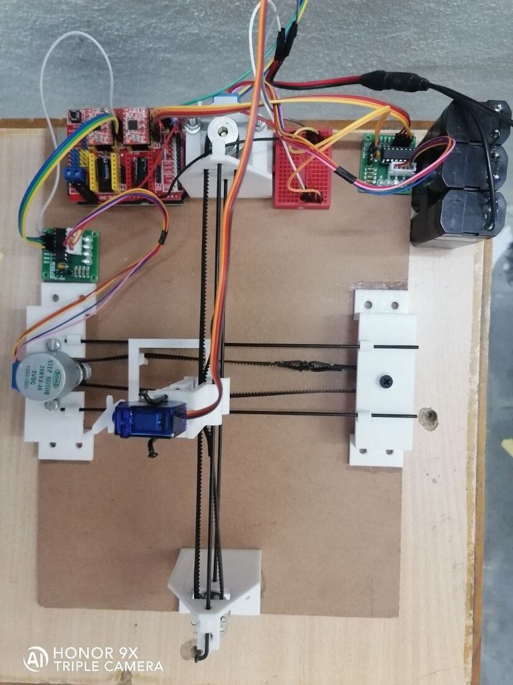
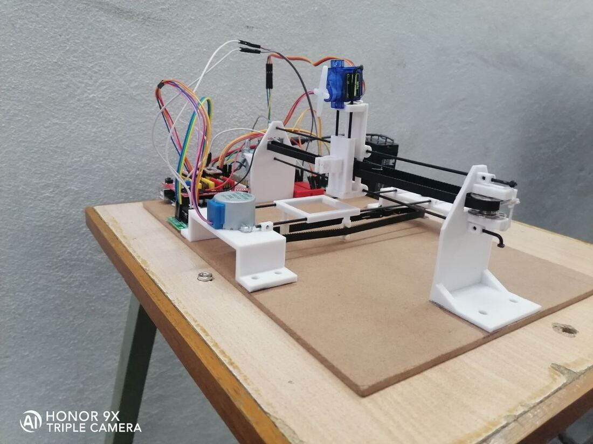

12 / MOTION CONTROL
CNC Plotter
A computer numerical controlled plotter that draws complex designs from digital input.
- Role
- Build and integration, in a team
- Context
- Independent build, Dec 2021 – Jan 2022
- Tools
- Stepper motors and drivers, linear guides, Arduino, pen carriage
- Scope
- Two-axis stepper stage with a pen actuator, driven from digital toolpaths
- Output
- A plotter that reproduces complex designs on paper
- Skills
- Stepper motor control
- Linear motion design
- G-code toolpaths
- Arduino
- Mechanical assembly
A computer numerical controlled plotter capable of plotting and drawing complex designs. Two stepper-driven linear axes carry a pen carriage over the work area, with a third actuator lifting and dropping the pen.
The build covered the mechanical stage, stepper driver wiring, and the controller that turns a digital design into coordinated axis motion.


2-axis stepper stagePen lift actuatorDigital toolpath input
Stepper motor controlLinear motion designG-code toolpathsArduino